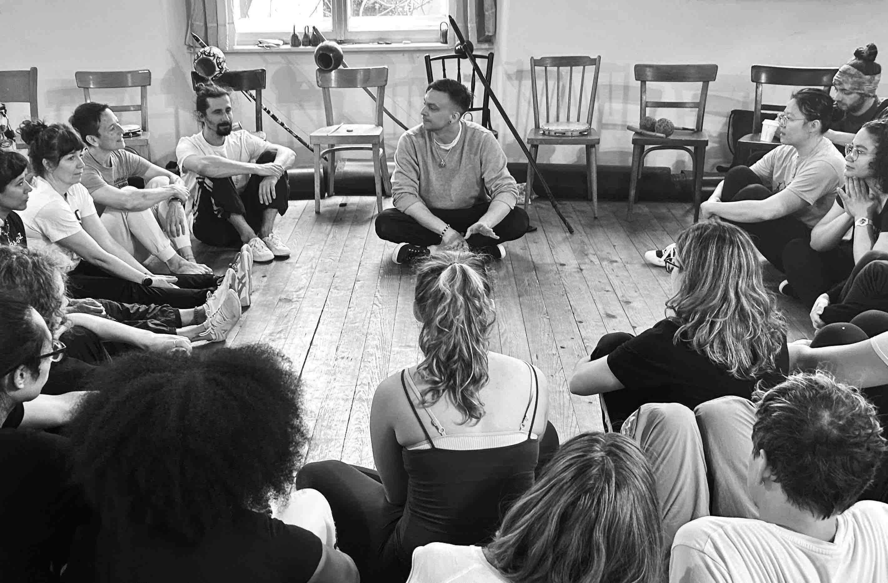
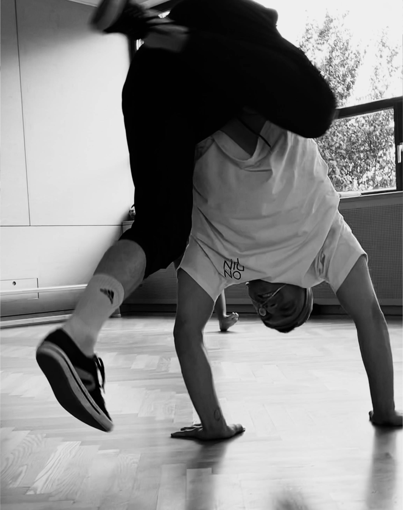

Capoeira für Anfänger*innen

Was ist Capoeira?
Capoeira ist eine einzigartige Mischung aus Tanz, Kampfkunst, Spiel und Musik. Sie entstand im afrobrasilianischen Widerstand gegen Kolonialismus und Sklaverei. Heute wird Capoeira weltweit praktiziert und genießt UNESCO-Anerkennung als immaterielles Kulturerbe der Menschheit. Abgesehen davon ist Capoeira ein tolles Training für Fitness, Freude und Freundschaft!
Unser Lehrer
Ondinha lernt und lebt Capoeira seit 2010. 2019 erhielt er seinen Trainertitel und hat seitdem in den USA, Indien, China und Singapur unterrichtet. Ondinha ist Schüler von Contramestre Baris Yazar.
Was dich erwartet
Unser Training beruht auf den vier Grundelementen Kondition, Technik, Spiel und Ritual. Das Ziel ist es, herauszufordern, Spaß zu haben und eigenständiges Erforschen zu inspirieren. Mehr über unsere Prinzipien
Bei Anfänger*innen betonen wir besonders die Entwicklung körperlicher Fitness. Wir arbeiten mit der Movement Rituals-Methode, um eine solide Grundlage für Capoeira zu schaffen.
Trainingszeiten
Buchungsinfos auf Anfrage


